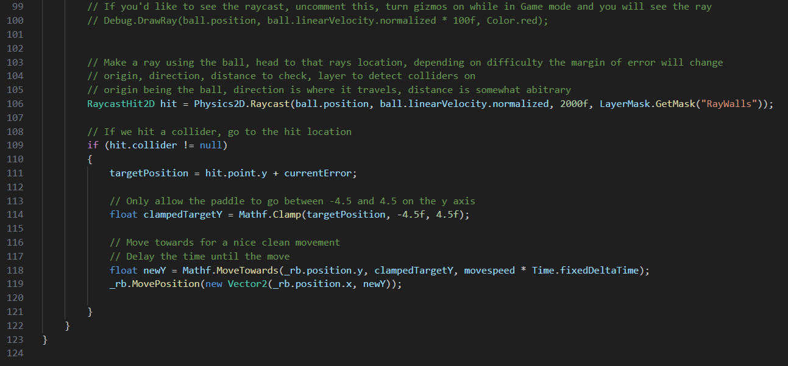

My Experience Making PONG
I decided to make PONG after a class on Unity I took at UCF. It was a fun course but I wanted some solo practice to really understand Unity, C# and game dev. Pong seemed like a fairly simple game to remake to meet those goals.
I had a lot of the bones done pretty quickly. The players movement was solid and I managed to get it working on controller too with Unity's input system. I could launch the ball and had the round restart when it reached each side of the screen. These were all pretty straight forward tasks with box colliders and some scripts.
I spent the bulk of my time making the enemy AI, which was my favorite part, but I also really enjoyed figuring out the physics. I tried using Unity's built in bounce physics but it didn't act like Pong to me at all. Most Pong remakes I see use the built in physics, but it's not fun to play with. I watched a few clips of official Pong and realized that the ball basically just launched in a straight line from the middle of the paddle to its location when it hit the ball, so if the ball hit the top the ball would shoot off at a pretty tight angle. This was pretty easy to replicate with some basic trig, and that was all I needed to do for physics.
The AI went through a few iterations and lots of minor tweaks. It was probably 80-90 percent of the dev time, luckily it was extremely fun. At first I had the enemy paddle go to the current Y location of the ball, but this made it jitter pretty heavily and even after fixing that it made the game far too easy. I ended up using raycasts. The ball would shoot out a ray in front of it; this would show where the ball would land on the enemy's side, then I would just send the paddle there after a short delay and with a random inaccuracy. I fine tuned these numbers until I would win about 50 percent of the time.
This is easily my favorite project. Video games are my favorite form of media and my biggest hobby. I plan to make a 2D platformer when I have the time, but even making PONG was quite the time sink.
You can play PONG yourself on my itch.io I've heard from most people that they find the singleplayer extremely hard. I've now realized that I overtuned the enemy AI because of how much practice I had while making the game, so good luck.